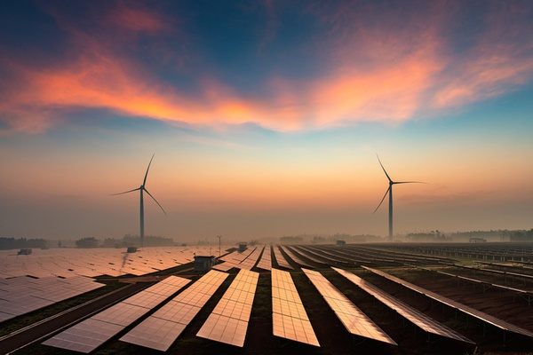
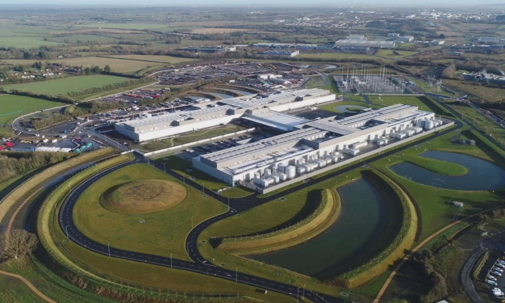

Des alternatives pour l'environnement
L’enjeu environnemental impose à Facebook de mieux gérer sa consommation d’énergie. Heureusement, de nombreuses solutions permettent au réseau social de résoudre ses problèmes de pollution numérique.
Enjeu environnemental
La croissance et le développement exponentiel du Web ne fait que détruire l’environnement. Les réseaux sociaux et plus particulièrement Facebook ne sont pas innocent quand à la pollution numérique d’Internet. Dans notre société actuelle, un nouvel enjeu apparait : l’écologie. En effet, de nouvelles problématiques se posent concernant le monde de demain. Même si l’avenir semble radieux grâce au progrès constant, les politiques mais surtout la population mondiale s’inquiètent du réchauffement climatique et de l’effet de serre qui menacent notre planète. La question sur l’écologie est alors omniprésente. Néanmoins, Facebook veut rassurer et montrer l’exemple. Le géant du Web promet 100% d’utilisation d’énergies renouvelables d’ici quelques années. En tant que réseau le plus influant sur le Web, Facebook doit entretenir une bonne image mais éviter à tout pris le Greenwashing.
Lire la suiteMais comment compte-il mener à bien cet objectif ?
Micro-trottoir sur les habitudes d'utilisateurs sur les réseaux
Les énergies renouvelables
L’électricité dont les data centers ont besoin, proviennent majoritairement des énergies fossiles. Néanmoins, ces énergies sont nocives et dangereuses pour notre planète. Elles doivent être remplacées. Pour parer aux critiques, il serait alors préférable d’utiliser des énergies renouvelables aux énergies fossiles. « Verdir » nos énergies serait la solution. Les éoliennes et les panneaux solaires permettraient un apport d’énergie constant non polluant et respectueux pour l’environnement. La construction et l’installation de parc éolien et de panneaux solaires font malheureusement perdre beaucoup de place et d’argent. Néanmoins, le géant du Web semble avoir compris ce qui est bon pour la planète. En effet, Facebook utilise actuellement 67% d’énergies renouvelables.
Une meilleur optimisation de la climatisation
Comme énoncé auparavant, les data centers, produisant de la chaleur, doivent être équipé d’énormes ventilateurs énergivores. Mais ne faudrait t-il pas revoir l’optimisation du chauffage pour une économie d’énergie ?
Au Pays-Bas, cette optimisation est étudiée. En effet, ne refroidir que les couloirs d’un data center plutôt que la pièce entière permettrait une économie d’énergie considérable. Cette économie est estimée à 20%. De plus, l’utilisation de l’air extérieur ne peut qu’être que bénéfique. L’utilisation d’eau froide pour refroidir les serveurs à l’instar des ventilateurs est encore une autre solution. Les idées et innovations ne manquent pas pour réduire la consommation des data centers.
Les Pays-Bas vont encore plus loin en réutilisant la chaleur des serveurs pour chauffer des écoles et des piscines d’une ville à proximité. La demande concernant la construction des data centers pour Facebook augmente de jour en jour. Le géant du Web, prenant en compte les enjeux actuels, a décidé d’installer un data center à 100km du cercle arctique dans le but de réguler la chaleur émise.
Revoir nos habitudes
Même si toutes ces solutions permettraient de réduire les pollutions numériques de Facebook, revoir nos habitudes concernant le Web pourrait être plus qu’efficace. En effet, selon Frédéric Bordage, fondateur de Greenit, l’éco conception serait un moyen de réduire les pollutions d’Internet. De plus en plus de site sont surchargé et « gras ». Il serait alors nécessaire d’épurer et d’enlever ce gras numérique. Si Facebook décide d’épurer son site, la consommation lié au numérique pourrait diminuer drastiquement. Finalement, ce n’est pas qu’avec les actions entrepris par les géants du Web que le monde peut changer mais avec l’action de tout un chacun